Een volledige stap-voor-staphandleiding voor een Live Diabetes Quiz in een grote zaal,
met deelnemers op hun eigen gsm, een quizmaster op de laptop en één duidelijk groot zaalscherm.
Voor quizmasterVoor begeleidersVoor deelnemershulp
1
Eerst het totaalbeeld
Wie gebruikt welk scherm?
📱
De deelnemer
Gebruikt uitsluitend het deelnemerscherm op de eigen gsm. Er wordt geen naam of e-mailadres gevraagd.
▣
Het grote zaalscherm
Toont dezelfde vraag en antwoordmogelijkheden, plus hoeveel deelnemers verbonden zijn en hoeveel antwoorden binnen zijn.
💻
De quizmaster
Gebruikt het quizmasterscherm op de laptop om de sessie te maken, vragen te bedienen en resultaten te volgen.
Belangrijk: de laptop en de gsm’s hoeven niet met hetzelfde wifinetwerk verbonden te zijn.
Ze moeten wel allemaal een werkende internetverbinding hebben.
2
Voor de deuren opengaan
Voorbereiding door de quizmaster
Materiaal en verbinding controleren
Laptop met oplader en een stabiele internetverbinding.
Beamer, groot televisiescherm of vaste zaalprojectie met de juiste kabel of draadloze koppeling.
Een actuele browser, bij voorkeur Chrome, Edge, Firefox of Safari.
Voldoende vooraf afgedrukte deelnemersbriefjes, plus enkele reserve-exemplaren.
Indien gebruikt: naam en wachtwoord van de gastenwifi van de zaal.
Minstens één korte proef met een eigen gsm vóór het publiek binnenkomt.
Kies het aantal vragen. 10 vragen is aanbevolen; 20 vragen is het aanbevolen maximum. Voor een korte demonstratie kunt u 5 vragen kiezen.
3
Vink “Vragen in willekeurige volgorde” alleen aan wanneer u een andere volgorde wenst.
4
Klik op Nieuwe quizsessie maken. Er verschijnt een unieke code van drie cijfers.
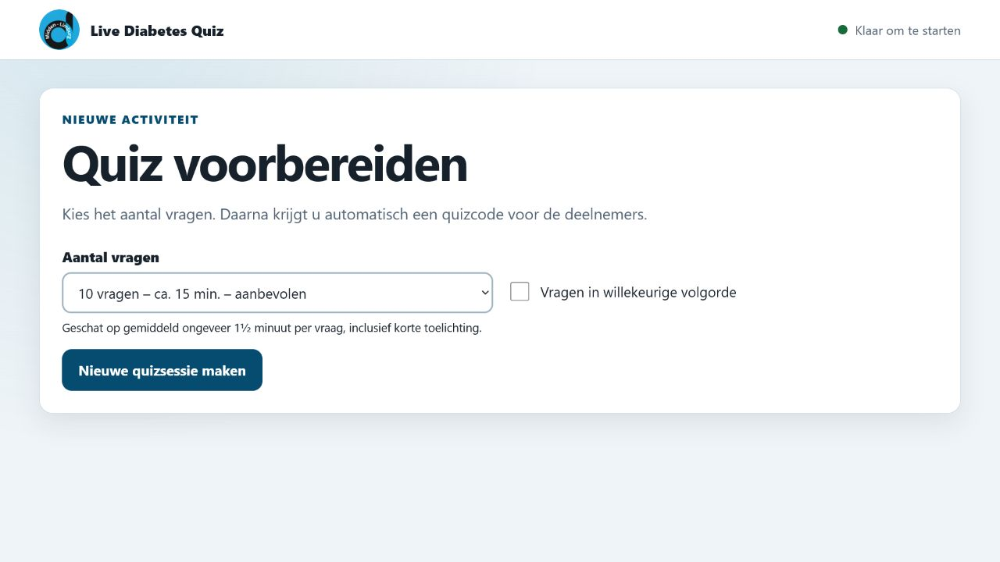
De quizmaster kiest eerst het aantal vragen. Tien vragen blijft de aanbevolen instelling.
Projectietip: gebruik op Windows bij voorkeur Beeldschermen uitbreiden.
Laat het quizmasterscherm op de laptop staan en sleep het geopende zaalscherm naar de projector.
Zo ziet het publiek nooit per ongeluk de bediening of het juiste antwoord vóór u dat wilt tonen.
3
Bij het binnenkomen
Het deelnemersbriefje en internet
Geef iedere deelnemer het briefje vóór hij of zij plaatsneemt. Het briefje is bewust zelfstandig leesbaar:
eerst internet activeren, daarna de quiz openen. Een begeleider kan oudere deelnemers rustig helpen.
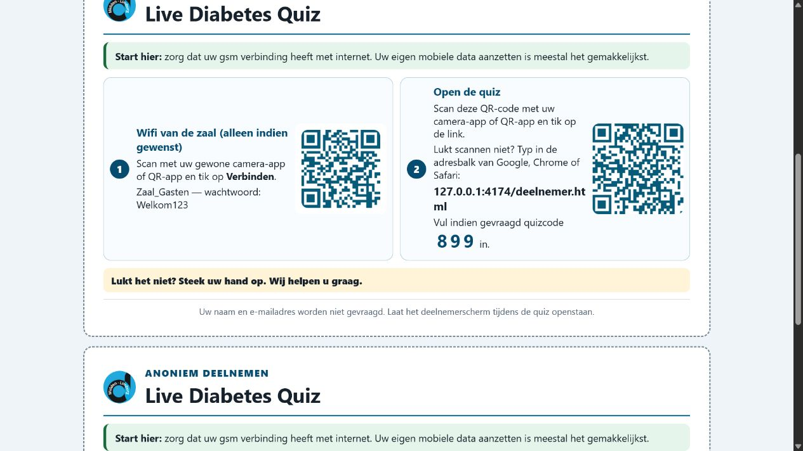
Voorbeeld met fictieve wifi. De echte naam, het echte wachtwoord en de quizcode worden vóór het afdrukken ingevuld.
Makkelijkste keuze
Eigen mobiele data
Vraag de deelnemer om mobiele data of internet op de gsm aan te zetten. Wanneer een website opent, is de verbinding klaar.
Dit voorkomt tijdverlies met wifiwachtwoorden en is meestal de eenvoudigste start.
Alternatief
Wifi van de zaal
Wie liever zaalwifi gebruikt, scant eerst de wifi-QR-code op het briefje.
Scannen kan met de gewone camera-app of met een vertrouwde QR-app. Er hoeft geen foto gemaakt te worden: tik op de melding die verschijnt.
Als de wifi-QR-code niet lukt
1
Open op de gsm Instellingen en daarna Wifi.
2
Kies de wifi-naam die op het briefje staat.
3
Typ het wachtwoord precies zoals vermeld. Hoofdletters en kleine letters kunnen belangrijk zijn.
4
Controleer kort of een gewone website opent. Ga daarna verder met de quiz.
De quiz openen
Eerste keuze: scan de quiz-QR-code
Richt de gewone camera-app of QR-app op de tweede QR-code. Tik op de internetlink die bovenaan of onderaan het camerabeeld verschijnt. De juiste quizcode is dan normaal al ingevuld.
Als scannen niet lukt: typ de link
Open Chrome, Safari, Samsung Internet of de browser van de Google-app. Typ het volledige adres van het briefje in de adresbalk, open de pagina en vul daarna de drie cijfers van de quizcode in.
Niet zoeken naar de quiz via Google. Typ de link rechtstreeks in de adresbalk. Controleer vooral punten, schuine strepen en eventuele streepjes.
4
Op de eigen gsm
Wat ziet en doet de deelnemer?
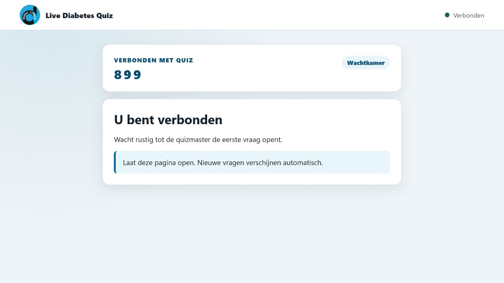
1. Verbonden. De deelnemer laat deze pagina open en wacht rustig op de eerste vraag.
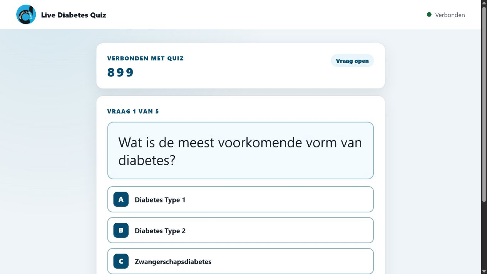
2. Vraag open. De deelnemer tikt één keer op A, B, C of D. Het antwoord wordt daarna vergrendeld.
1
Na verbinding verschijnt U bent verbonden. Laat de browserpagina tijdens de volledige quiz open.
2
Wanneer de quizmaster start, verschijnt automatisch de eerste vraag met vier grote antwoordknoppen.
3
Tik één keer op het gekozen antwoord. De melding Uw antwoord is ontvangen en veilig bewaard bevestigt de ontvangst.
4
Het antwoord kan niet meer gewijzigd worden. Dit voorkomt onbedoeld dubbel antwoorden.
5
Nadat de quizmaster het juiste antwoord toont, ziet de deelnemer groen bij juist of rood bij het eigen foute antwoord, samen met de juiste oplossing.
6
De volgende vraag verschijnt automatisch. De deelnemer hoeft geen pagina te vernieuwen en geen nieuwe code in te voeren.
5
Voor iedereen zichtbaar
Het grote zaalscherm
Klik op de laptop op Open groot zaalscherm en toon dat browservenster via de projector.
Het publiek ziet inhoudelijk dezelfde vraag en antwoorden als op de gsm, maar kan op het grote scherm niets aanklikken.
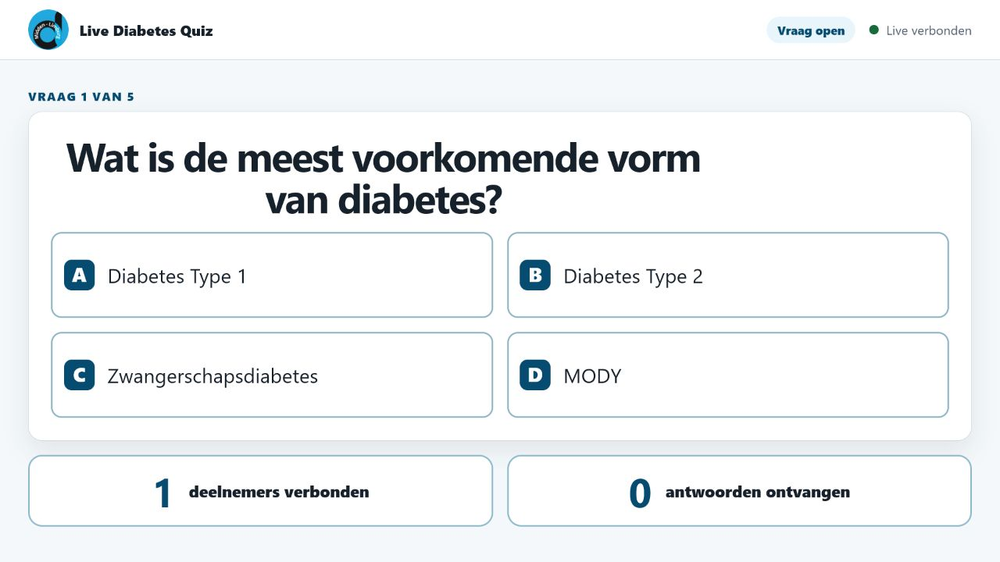
Onderaan ziet iedereen hoeveel deelnemers verbonden zijn en hoeveel antwoorden voor deze vraag zijn ontvangen.
Wanneer doorgaan? Wacht tot “antwoorden ontvangen” ongeveer gelijk is aan “deelnemers verbonden”.
Vraag bij twijfel rustig of iemand nog bezig is. Een klein verschil kan voorkomen wanneer iemand de pagina heeft gesloten of tijdelijk geen verbinding heeft.
6
Rustige bediening, stap voor stap
Wat ziet en doet de quizmaster?
De wachtkamer
De quizcode, deelnemerslink, afdrukknop en knop voor het zaalscherm staan bovenaan. Rechts ziet u hoeveel toestellen verbonden zijn.
Start pas wanneer de meeste deelnemers het bericht U bent verbonden op hun gsm zien.
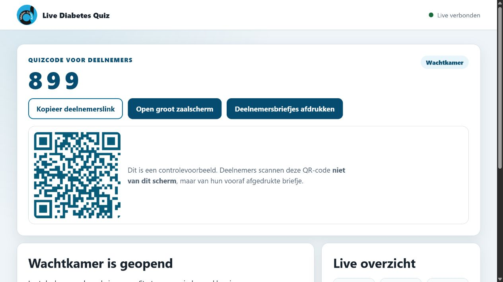
De wachtkamer vóór de eerste vraag.
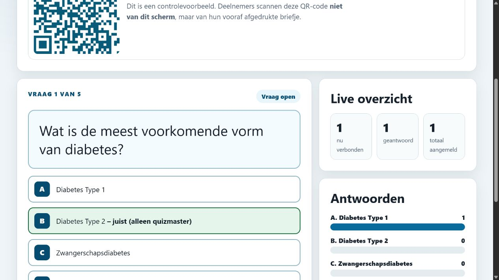
Tijdens een open vraag ziet de quizmaster de vraag, antwoorden en live aantallen.
Tijdens iedere vraag
1
Lees de vraag en antwoorden rustig voor.
2
Geef deelnemers voldoende tijd om op hun gsm te antwoorden.
3
Controleer rechts het aantal ontvangen antwoorden.
4
Sluit eventueel de antwoordtijd en toon daarna het juiste antwoord.
5
Geef indien nuttig een korte toelichting en ga naar de volgende vraag.
Betekenis van alle bedieningsknoppen
Knop
Wanneer zichtbaar?
Wat gebeurt er?
Start quiz
In de wachtkamer
Opent vraag 1 op de gsm’s en op het grote scherm.
Sluit antwoorden
Terwijl de vraag openstaat
Stopt nieuwe antwoorden. Gebruik dit wanneer de antwoordtijd duidelijk voorbij is.
Toon juiste antwoord
Bij een open of gesloten vraag
Markeert het juiste antwoord en geeft iedere deelnemer persoonlijke feedback.
Volgende vraag
Nadat het antwoord getoond is
Opent de volgende vraag automatisch voor iedereen.
Vorige vraag
Vanaf vraag 2
Gaat één vraag terug. Eerder opgeslagen antwoorden veranderen niet.
Quiz beëindigen
Tijdens de quiz
Stopt de quiz vroegtijdig. Gebruik dit alleen wanneer u bewust wilt stoppen.
Eindanalyse
Na het tonen van het juiste antwoord op de laatste vraag
Sluit de quiz normaal af en toont de top drie op het grote scherm.
Nieuwe sessie voorbereiden
In de bedieningskolom
Brengt u terug naar de keuze van het aantal vragen. Verbonden deelnemers gaan automatisch mee naar de nieuwe sessie zodra die gemaakt is.
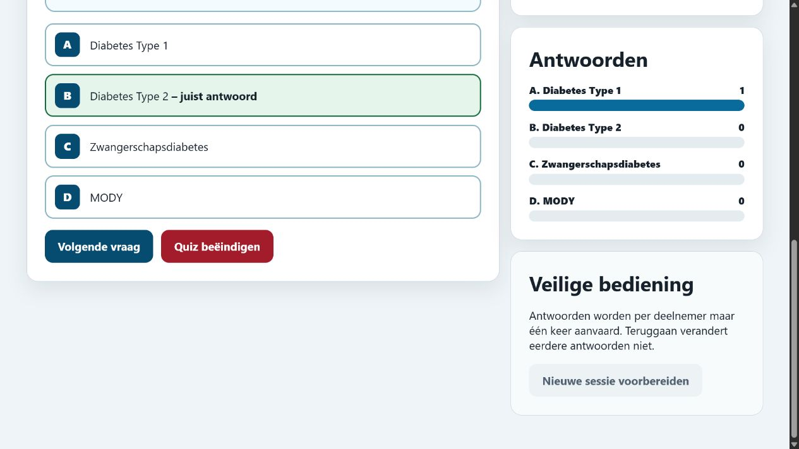
Na “Toon juiste antwoord” zijn de verdeling en het juiste antwoord zichtbaar. Bespreek dit kort en ga daarna verder.
7
Na de laatste oplossing
Het einde voor deelnemer, zaal en quizmaster
1
Toon bij de laatste vraag eerst het juiste antwoord.
2
De linkse knop heet nu Eindanalyse. Klik daarop om de quiz normaal af te ronden.
3
De deelnemer krijgt op de eigen gsm de persoonlijke score en een overzicht van de eigen foute antwoorden.
4
Het grote scherm toont de drie meest fout beantwoorde vragen, telkens met foutpercentage, vraag en juiste antwoord.
5
De quizmaster ziet daarnaast de volledige groepsanalyse op de laptop.
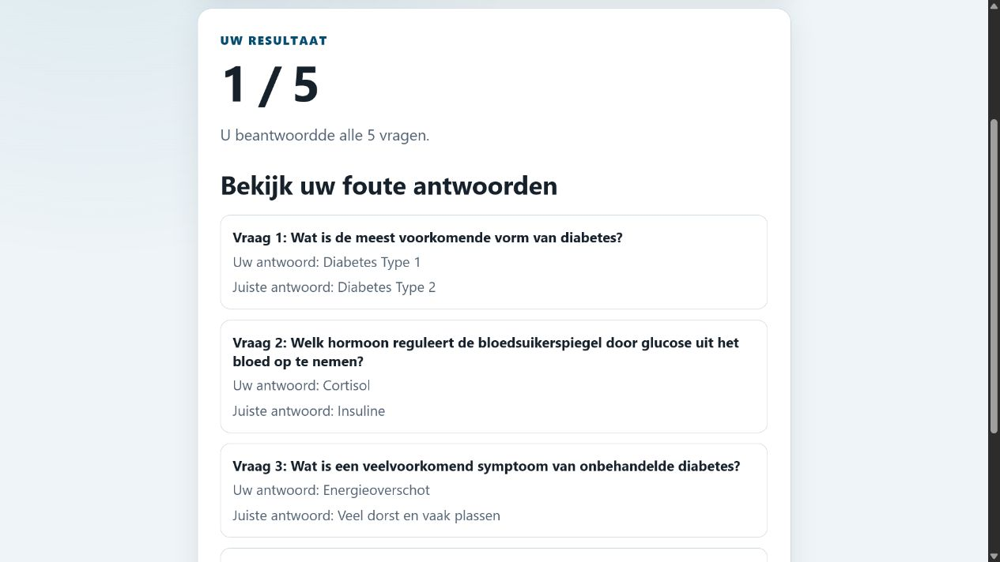
Deelnemer: persoonlijke score en eigen foute antwoorden. Andere deelnemers zien dit niet.
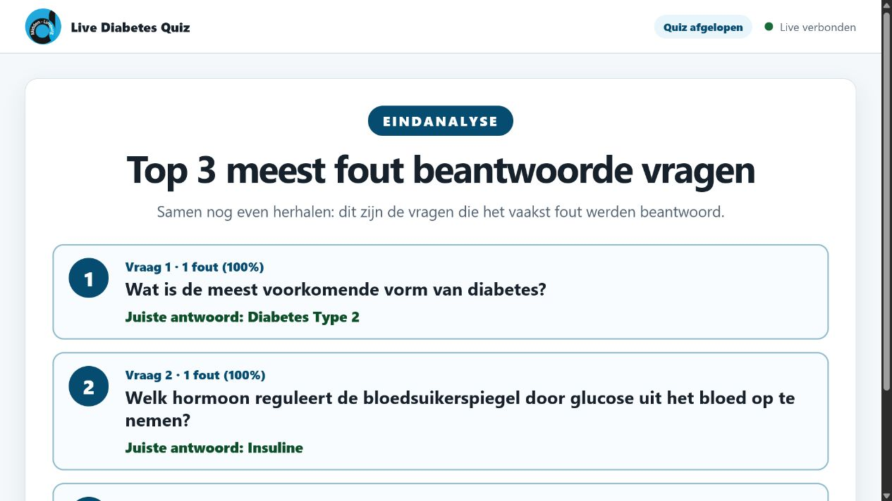
Groot scherm: gezamenlijke top drie om de belangrijkste leerpunten nog eens te bespreken.
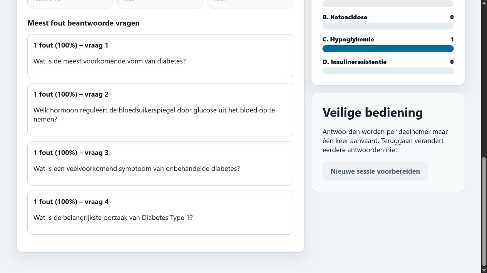
Quizmaster: aantallen, juistpercentage en overzicht van moeilijke vragen.
Nog een quiz starten? Klik op Nieuwe sessie voorbereiden, kies opnieuw het aantal vragen en maak de sessie.
Deelnemers die hun pagina open hebben gelaten, worden automatisch naar de nieuwe sessie gebracht. Zij hoeven het briefje niet opnieuw te scannen.
8
Rustig oplossen
Veelvoorkomende problemen
De QR-code wordt niet herkend
Maak de cameralens schoon, zorg voor voldoende licht, houd de gsm iets verder weg en probeer de gewone camera-app. Typ anders de link van het briefje handmatig.
De deelnemer ziet geen internet
Zet mobiele data kort uit en weer aan, of verbind opnieuw met de zaalwifi. Test met een gewone website vóór u opnieuw de quiz opent.
De pagina vraagt een quizcode
Vul de drie grote cijfers van het briefje in en tik op Deelnemen. De naam van de deelnemer is niet nodig.
Een nieuwe vraag verschijnt niet
Wacht enkele seconden. Controleer bovenaan of “Verbonden” staat. Vernieuw alleen wanneer de verbinding echt vastgelopen lijkt; het reeds bewaarde antwoord blijft behouden.
De antwoordknoppen werken niet meer
De deelnemer heeft al geantwoord of de quizmaster heeft de antwoorden gesloten. Per vraag wordt maar één antwoord aanvaard.
Het grote scherm toont niet de juiste fase
Sluit het oude zaalscherm, klik opnieuw op Open groot zaalscherm vanuit de actieve quizsessie en zet dat nieuwe venster op de projector.
Het aantal verbonden deelnemers daalt
Een toestel kan tijdelijk slapen of de pagina kan gesloten zijn. Vraag deelnemers om het quizzescherm open te laten en hun gsm niet langdurig te vergrendelen.
De quizmaster wil onmiddellijk stoppen
Gebruik Quiz beëindigen. De huidige resultaten worden afgesloten en de beschikbare eindanalyse verschijnt.
Laatste controle vóór het publiek binnenkomt
Korte generale repetitie
Alles klaar? Dan kan de quiz rustig, anoniem en gezamenlijk beginnen.